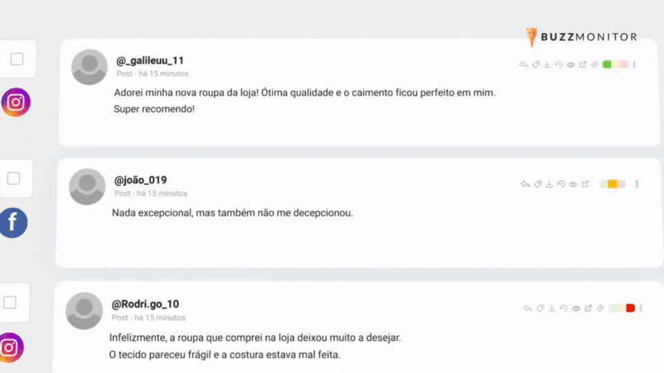
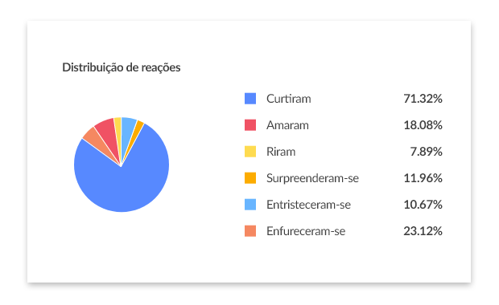
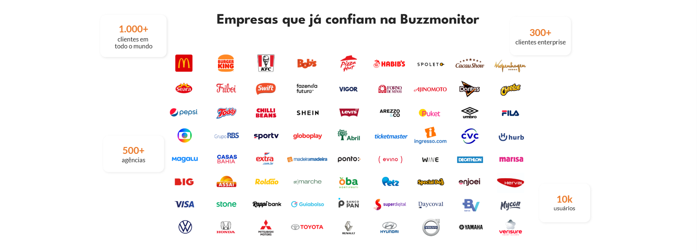

Monitoramento de marca lento e ineficiente
Quem monitora as redes sociais na mão sempre chega atrasado. É muito trabalho, falta de visibilidade e pouco resultado. Faça social listening com IA e veja todos os dados num painel só, em tempo real, com análises geradas por IA.
Agendar demonstração gratuitaA sua rotina de monitoramento se parece com essa?
- Alguém do time abre Instagram, Twitter e WhatsApp toda semana, procurando o nome da marca na mão.
- Sempre sobra menção pra trás, porque ninguém consegue ler tudo sozinho.
- Não existe um número confiável de quantas vezes a marca foi citada essa semana.
- E, quando existe volume, falta análise qualitativa: ninguém sabe o que essas conversas significam.
- Quando a crise aparece, o time fica sabendo por último, não primeiro.
Você não precisa de mais esforço. Precisa da ferramenta certa.
Monitoramento e dashboards no lugar da caçada manual
A Buzzmonitor acompanha marca, concorrentes e mercado em tempo real, num painel só, sem precisar abrir uma aba por rede social.
Monitoramento em tempo real
Monitore mais de 15 redes sociais em tempo real. Acompanhe sua marca, concorrentes, tendências e o mercado.
Dashboards customizáveis
Tenha dashboards customizáveis e atualizados em tempo real com todos os dados da sua operação.
Gestão de crises
Conte com alertas automáticos, priorização de tickets e outras ferramentas para prevenir e gerir crises com rapidez.
Plataforma centralizada
Centralize monitoramento, atendimento, dashboards, performance, insights e agendamento na mesma plataforma.
Buzz Pills & AI Insights
Buzz Pills e AI Insights: conte com análises geradas por IA com os pontos mais importantes da sua marca.
Economize tempo
Economize horas de trabalho manual e tenha dados concretos para tomadas de decisão rápida e assertiva.
Inteligência artificial para monitoramento de mídias sociais
A IA monitora todo o universo da sua marca e transforma dados em insights.
Monitore qualquer termo nas redes sociais: hashtags, marcas, concorrentes e eventos, com painéis de controle ilimitados e relatórios em tempo real.
Agendar demonstração gratuita

IA para gerar insights
A IA faz o trabalho pesado e sua marca obtém insights acionáveis em segundos.
O AI Insights gera análises resumidas dos seus relatórios de monitoramento: você economiza tempo e recebe as principais conclusões em segundos, prontas para compartilhar com sua equipe.
Agendar demonstração gratuitaGestão de crise em tempo real
Antecipe as ameaças e proteja a reputação da marca.
A nossa IA cria alertas de termos sensíveis para você agir antes que a crise exploda. Identifique rapidamente picos de menções e sentimento negativo, priorize tickets e gerencie crises com dashboards dedicados.
Agendar demonstração gratuita

Feito pra quem hoje não tem nenhuma ferramenta ou está insatisfeito
- Gestores de marketing e redes sociais sem visão confiável do que falam da marca
- Times de CX que só descobrem reclamação quando o cliente já está insatisfeito
- Agências que monitoram várias marcas ao mesmo tempo, na mão
Quem já saiu do manual
Caffeine Army
A marca de suplementos saiu de processos manuais para uma operação digital integrada com a Buzzmonitor.
A equipe descobriu um sabor novo para o produto lendo comentários de clientes, sem gastar um real com pesquisa de mercado. O lançamento foi um sucesso porque a marca ouviu o cliente.
O que nossos clientes já conquistam com a Buzzmonitor
Redução de 33% no tempo de produção de relatórios
A Oi otimizou seus resultados operacionais com os AI Insights da Buzzmonitor.
Marca mais citada no maior reality do Brasil
A Betnacional usou os insights em tempo real da Buzz Pills sobre o programa para criar estratégias assertivas.
Respostas até 3x mais rápidas no atendimento
O Grupo Casas Bahia ganhou mais agilidade no relacionamento multicanal.
Decisões mais estratégicas e baseadas em dados
A Camil Alimentos acelerou seus resultados com dashboards atualizados em tempo real.
Veja quanto tempo sua equipe recupera monitorando em tempo real
Agende uma demonstração gratuita e veja a Buzzmonitor rodando com os dados reais da sua marca.
